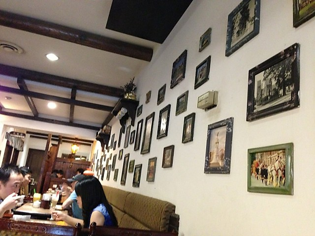
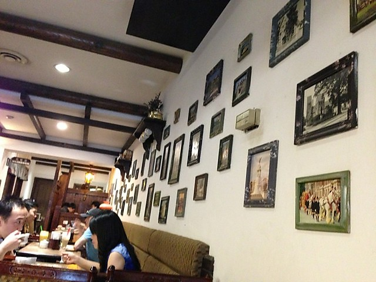
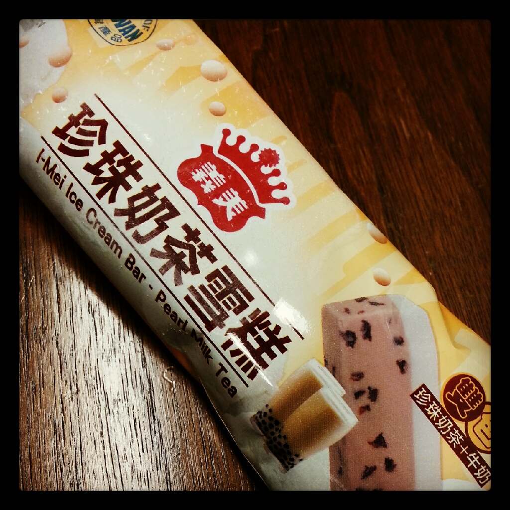

Photo is gonna be here
M a g a z i n e
-
section1
Background -
section2
Process -
section3
Final

para
C e r e a l
xs-
section1
Background -
section2
Process -
section3
Final
para
Pudding Shaved Ice
 

{kind=link}
Yesterday I went to Leisure Tea &Coffee.This place is one of my favourite dessert and bubble tea places.

The pudding shaved ice with taro pearl (left photo) is my NO.1 choice.
Beside Pudding shaved ice, Taro pearl with tofu pudding hot soup (right photo) is my NO.2 choice.


When I am hungry, I would order either crispy chicken sandwich (left photo) or crispy chicken crêpe(right photo). They are amazing.
***Leisure Tea & Coffee opens till late night everyday. CASH ONLY!!!
Just a heads up, Leisure is always busy on Friday, Saturday night and holidays.
- PRICE: $5-10
- TASTE: 5 / 5
- SERVICE: 3/5 average
- PLACE: 4/5 vintage and unique decoration
1110-8391 Alexandra Road, Richmond.
Tel: 604-821-9998
Posted on July 25,2013
Pearl Milk Tea Ice Cream Bar

HEY everypme! If you are a milk tea lover, you must try it! The pearls are chewy and the ice cream bar tastes like milk tea. On one side is the milk tea flavour with pearls embedded inside, on the other side os the regular ice cream.
Instead of drinking a cup of milk tea with pearl, in summer time, pearl milk tea ice cream bar would be a great alternative.
I found it at the Price Smart on No.3 Road, Richmond. I heard from my friend that the T&T Supermarket sells it too.
- PRICE: $5-7 for
- TASTE: 4.5/5
- MADE IN TAIWAN
Posted on July 20,2013


Who am I ?
- Self-motivated Economics student with strong interpersonal skills
- Actively volunteering and contributing to the community
- Outstanding customer service in multiple high pressure environment
Skills
Communication Skills
- Fluent in Cantonese and Mandarin
- Beginner in Korean
Interpersonal Skills
- Diligent and reliable individual with well-developed communication and interpersonal skills
- Cooperative with other employees.TEAMWORK!
Technical Skills
- Word Processing: Microsoft Word
- Database and spreadsheet: Microsoft Excel and Microsoft Access
- Presentation: Microsoft PowerPoint
- Web page design: HTML, CSS, Adobe Dreamweaver and Flash
- Graphic design: Adobe Photoshop, Illustrator and InDesign
Personal Skills
- Completed Business Administrative Diploma
- Experienced with mathematics and accounting
- Hardworking and Enthusiastic in enriching my knowledge in the field of Economics
- Knowledge of basic reception and bookkeeping
Experiences
Cashier, LONDON DRUGS (Richmond, BC) 2008- Present
- Provide courteous and quality service to customers while accurately processing transactions and bagging groceries
- Strengthen communication skills through solving and settling issues raised by customers
Helping Hands, CHINESE COMMUNITY POLICING CENTER (Vancouver, BC) 2012
- Accurately direct and assist residents and tourists in Chinatown area
- Translate and write articles for the Vancouver Police Department and newspapers to promote important community safety messages
- Settle clients' incidents and enquires by reporting incidents and suggesting solutions
- Edit articles and photos for the summer newsletter
Election Official, RICHMOND CITY ELECTION OFFICE (Richmond, BC) 2011
- Verbal communication skills to welcome and provide instructions to voters in a friendly and efficient manner
- Well-organized and responsible in setting up the voting station, the ballot box, and all voting materials.
- Pay good attention to detail and ensure all voters vote fairly
Youth summer camp leader, S.U.C.C.E.S.S. (Richmond, BC) 2010
- Efficiently organized daily events for a group of 30 multicultural youth immigrants by communicating with other leaders
- Taught youth immigrants English and introduced them to Canadian culture in order to help the youth immigrants adjust to Canadian living
X-Ray Operator, CONTEMPORARY SECURITY CANADA (Vancouver, BC) 2010
- Operated X-Ray machine and interpreted X-Ray images with careful attention to detail
- Cooperated with teammates to ensure that prohibited items do not enter an Olympic Games Venue
- Worked efficiently in fast-paced environment with high volume audiences of over 250 people per day
Educations
Simon Fraser University, Burnaby, BC, 2011- Present. Completed two semesters of Bachelor's degree in Arts, Economics (ECON), minor in Interactive Arts + Technology (SIAT). Courses include:
- Designed and created web sites
- Hands-on practice of art and design in digital media
Kwantlen Polytechnic University, Richmond, BC, 2008-2011. Have completed Business Administrative Diploma. Courses include:
- Used Microsoft Word processing software, created PowerPoint presentations, constructed spreadsheets with tables, graphs, and over 50 formulas in Microsoft Excel
- Accounting Mathematics: Business mathematics, including the mathematics of merchandising, interest, annuities and investment decisions